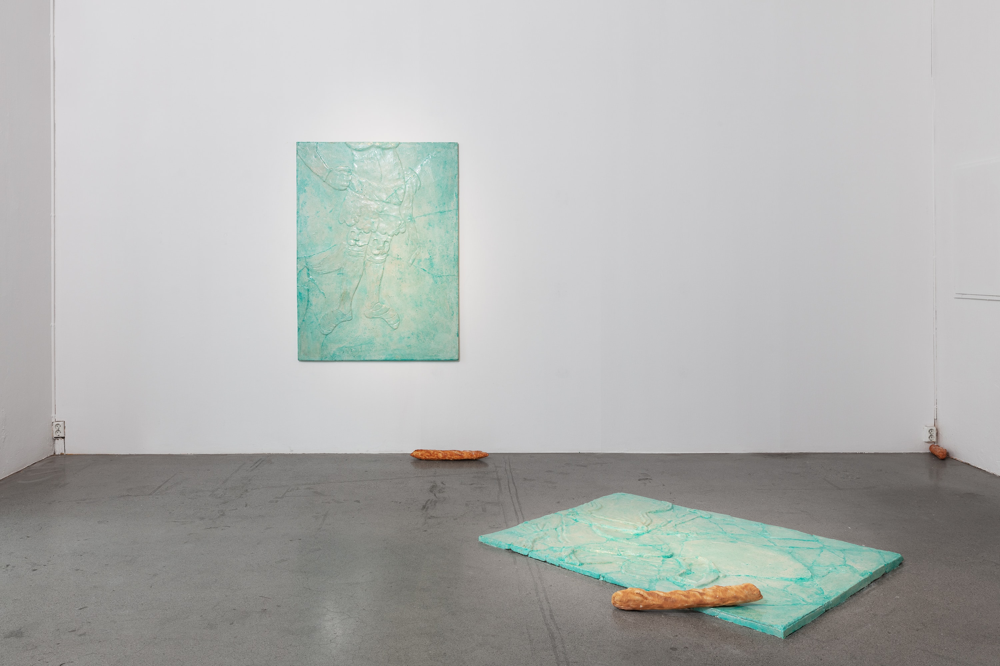
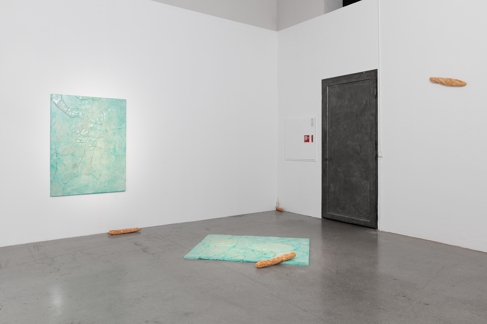
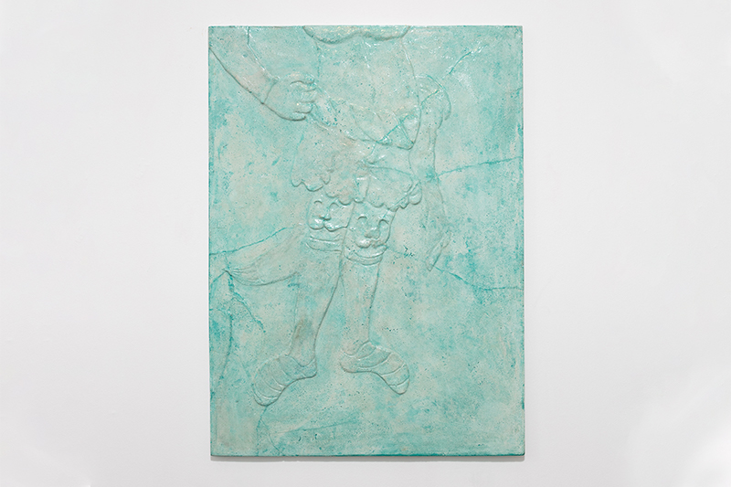
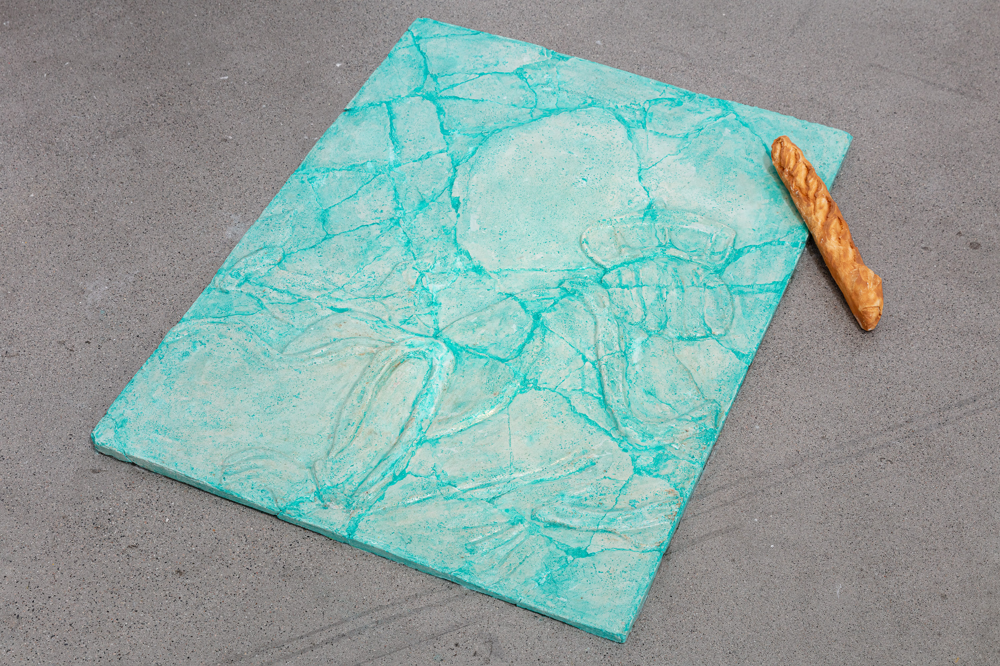
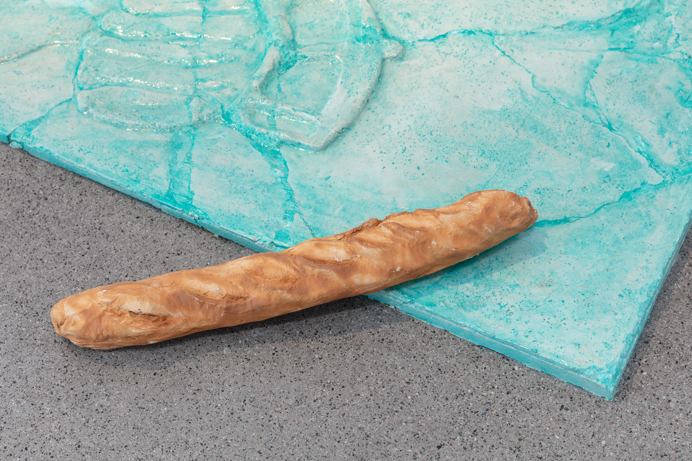
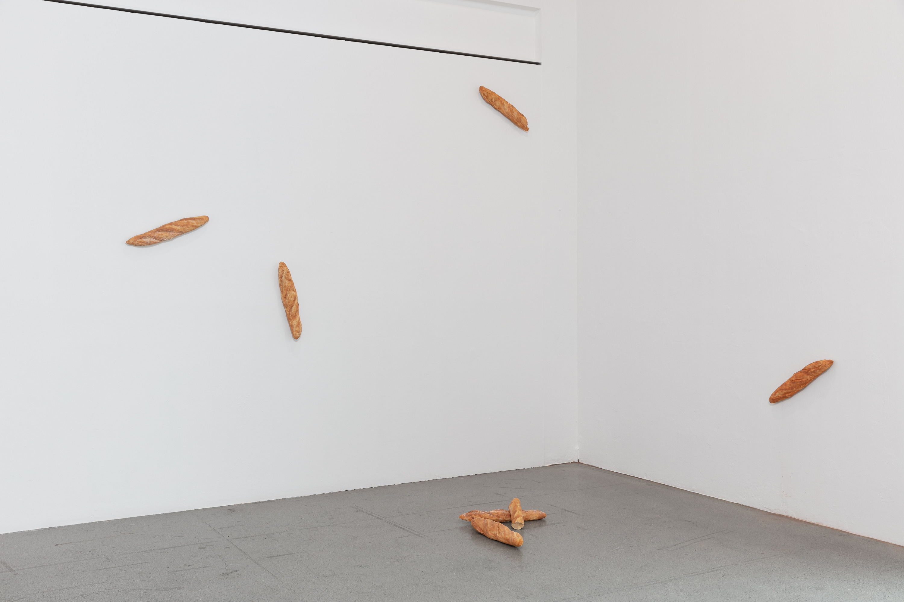
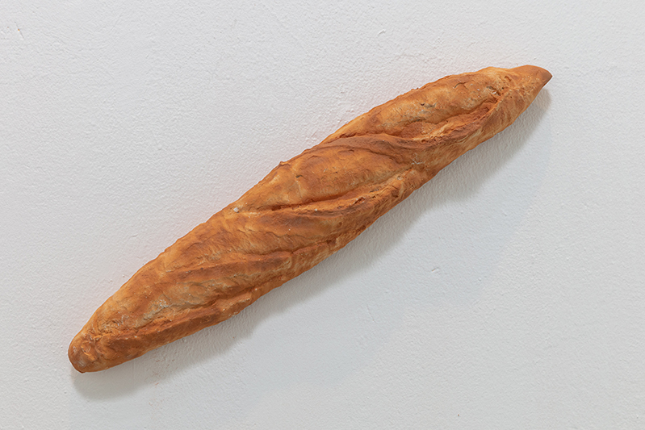

Lizaveta
Trafo Kunsthall, Asker, Norway
01.10. - 30.10.22

Lizaveta, 2023

Lizaveta, 2023

Lizaveta (Jade), 2023, painted concrete, 140 x 112 cm

Nobels fald (Jade), 2023, painted concrete, 140 x 112 cm

Untitled (Baguette), 2023, painted A1,

Untitled (Baguette), 2023, painted A1,

Untitled (Baguette), 2023, painted A1,

Untitled (Baguette), 2023, painted A1,
DK
Der var en mand. Denne mand havde en kat, hvilken katastrofe den var! Den kedede ham ihjel. Manden tænkte og tænkte, tog katten, puttede den i en pose og bar den ind i skoven. Tog posen og smed den - lad den forsvinde sagde han. Katten kom fri og gik og gik for at støde på en hytte. Den klatrede op på loftet, og lagede et hjem for sig selv. Hvis den vil spise, vil den gå i skoven, fange fugle, fange mus, spise sig mæt. Alt var godt! En dag gik katten en tur, og mødte ræven…
ENG
Once upon a time there was an old peasant. He had a cat who was always getting up to mischief. The old peasant got tired of him. He thought it over, then picked up the cat, put him in a sack, tied it up and took it to the forest. And there he left the cat to fend for himself. The cat wandered about the forest until he came to a woodman's cottage; he climbed into the loft and made himself at home. When he was hungry he would go and catch birds or mice in the woods, eat his fill and come back to the loft. All was fine and dandy! One day the cat went walking and met a fox...
from the Russian Folk Tales: Liza the Fox and Catafay the Cat
Photo: Kunstdok / Tor Simen Ulstein
links:
Kuba Paris